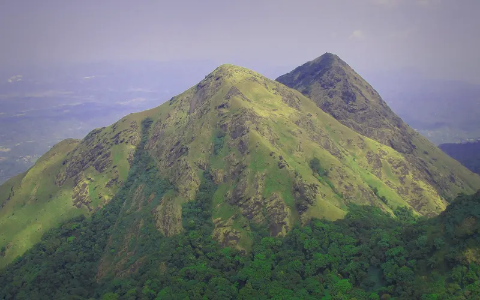

5 treks
Treks within 350 km of Bangalore in a straight line, nearest first. Road distance is longer.
Kumara Parvatha 213 km · Chembra 229 km · Tadiandamol 229 km · Kudremukh 250 km · Meesapulimala 324 km

Moderate–hard · 3 daysPhoto: Prashanth bhat, CC BY-SA 4.0
Kumara Parvatha
▲ 1,712 m · Best Oct–Feb
Easy · 1 dayPhoto: Aneesh Jose, CC BY-SA 3.0
Chembra
▲ 2,100 m
Easy–moderate · 3 daysPhoto: Vinayaraj, CC BY-SA 4.0
Tadiandamol
▲ 1,748 m · Best Sep–Feb
Moderate · 3 daysPhoto: Dhruvaraj S from India, CC BY 2.0
Kudremukh
▲ 1,892 m · Best Jun–Aug, Nov–Feb
Hard · 2 daysPhoto: Niyas8001, CC BY-SA 4.0